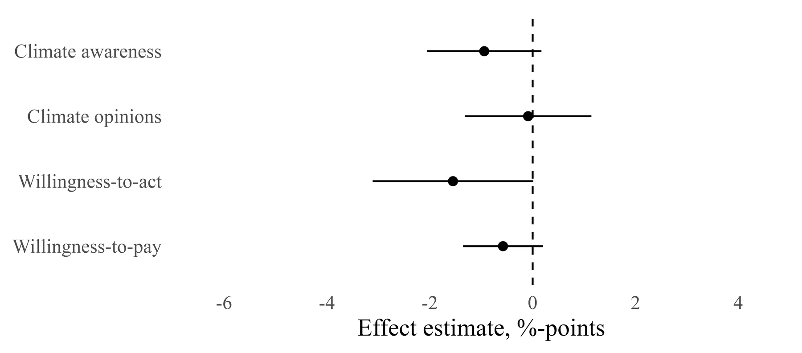

Ineffectiveness of Priming and Contextualizing Personal Weather Experiences: Evidence from a Survey Experiment on Summer Heat
Public Opinion Quarterly
Asking Danes to recall the record-hot summer of 2018 did not raise their support for climate action, and neither did telling them that heat waves are linked to climate change.

We study whether communication that attributes extreme weather to climate change along with individuals’ personal weather experiences can mobilize increased support for climate change action and policies. Using a preregistered representative survey experiment from Denmark, we randomly assign respondents to two treatments: (a) a hot weather prime that asks them to recall the extreme Danish summer of 2018 and (b) contextualizing information that links extreme weather events to climate change. We find that priming past heat experience does not foster increased climate awareness, opinions, or willingness to act or pay. We also fail to find that climate communication strengthens the effect of heat experience on climate attitudes or matters on its own. We argue, and provide tentative evidence, that this is because people in northern regions often recall heat spells as something pleasant rather than perceiving them as a risk. Similar results were obtained using quasi-experimental data on recent local temperature deviations instead of past heat experiences. Overall, the results suggest that what is objectively and meteorologically extreme may subjectively invoke positive feelings and therefore not increase support for climate action. We discuss the implications for climate communication and opinion formation.